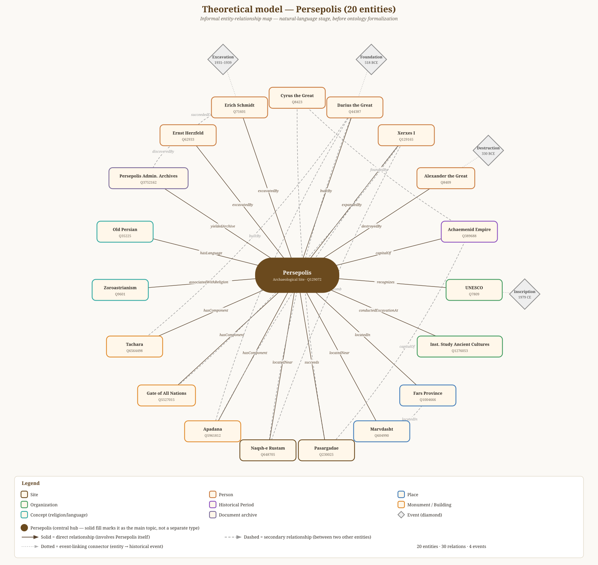
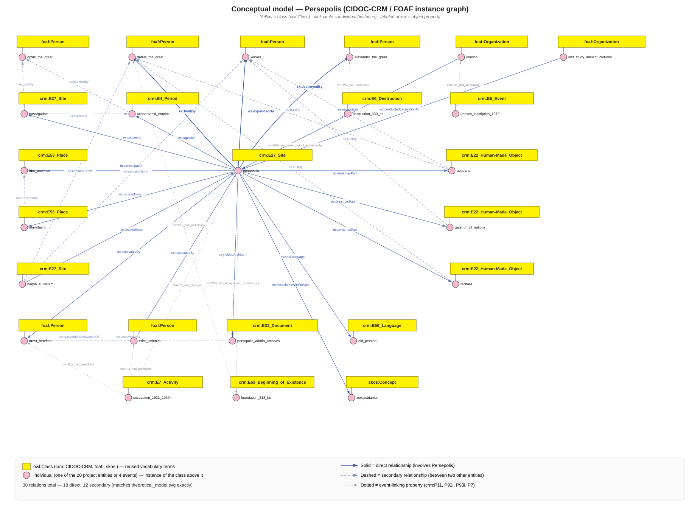

Research focus
How can Persepolis be represented as a network connecting ancient construction, destruction, imperial context, modern excavation and heritage recognition?
Digital Humanities · LODLAM
A Linked Open Data project
Project idea
The project starts from the Wikipedia page on Persepolis and builds a verified network of rulers, sites, monuments, archaeologists, institutions, concepts, language and documentary evidence.
How can Persepolis be represented as a network connecting ancient construction, destruction, imperial context, modern excavation and heritage recognition?
Entity selection → authority reconciliation → theoretical model → ontology model → TEI/XML → HTML and RDF/Turtle.
Reuse established vocabularies and derive multiple outputs from one structured XML source so the project remains consistent.
Entity selection
The selection deliberately goes beyond “site + rulers” to include excavation history, nearby sites, monuments, religion, language and an administrative archive.
Human-language stage
The theoretical model expresses the domain before ontology formalization. It makes the historical meaning of each relation explicit.

Alexander destroyed Persepolis; Xerxes expanded it; the site was capital of the Achaemenid Empire.
18 solid connections directly involve Persepolis, including builders, location, monuments and excavators.
12 dashed connections create a richer network between other entities rather than a simple star graph.
Foundation, destruction, excavation and UNESCO inscription are modelled as separate dated events.
| Subject | Property | Object | Scope |
|---|
Formal semantic stage
The informal relations are translated into classes, individuals and properties using established Semantic Web vocabularies.

Sites, monuments, places, periods, documents, language and historical events.
People and organizations, including rulers, archaeologists, UNESCO and the research institute.
Descriptions and general relations such as spatial, hasPart, date, language and creator.
Zoroastrianism is represented as a controlled concept.
Identity links, labels and nineteen narrow project properties defined as subproperties of existing terms.
Structured source
One TEI/XML file stores the narrative, entity catalogue, events, authority identifiers and all thirty relations.
data.xmlEntities are described once in the <standOff> section and referenced from the running text through @ref.
<place xml:id="persepolis">
<placeName>Persepolis</placeName>
<idno type="wikidata">...Q129072</idno>
</place>style.xsl + transform.pyXSLT rules transform machine-friendly XML into a readable webpage with highlighted entities, entity tables and the full relationship table.
data.xml
↓ XSLT with lxml
output.htmlMachine-readable output
The Python generator reads the TEI source and creates a Turtle knowledge graph with ontology declarations, entity resources, events and relations.
Example RDF statement
res:persepolis ex:builtBy res:darius .
res:persepolis ex:destroyedBy res:alexander .
res:unesco ex:recognizes res:persepolis .Quality control
The project checks not only syntax, but also historical accuracy and agreement between its different outputs.
Entity catalogue, TEI standOff and RDF dataset agree.
Each entity has a verified Wikidata QID; Wikipedia links are included where available.
Theoretical model, conceptual model, XML listRelation and RDF predicates match.
destroyedBy, expandedBy and capitalOf prevent misleading claims.
The files were parsed successfully with lxml.
Prefixes resolve and every statement is correctly terminated.
Speaking order
Use the website as a visual guide; explain the modelling choices rather than reading the page.
Why Persepolis is a strong central node for a cultural heritage graph.
Twenty entities, expanded beyond rulers to include excavation and documentary context.
Explain two or three historically important arrows.
Show how the domain becomes classes, instances and typed properties.
State exactly what CIDOC-CRM, FOAF, DCTERMS, SKOS and OWL contribute.
One structured source generates the human and machine-readable outputs.
Read one subject–predicate–object statement and explain the URIs.
Emphasize interoperability, authority links and consistency.
It is designed for cultural heritage and can represent sites, objects, places, events and periods.
Only narrow relations were added, and each is anchored as a subproperty of an existing DCTERMS property.
RDF is the graph model; Turtle is one syntax used to write it.
The theoretical model expresses domain meaning; the conceptual model formalizes it with ontologies.
Project package
Every file remains available from the offline presentation website.